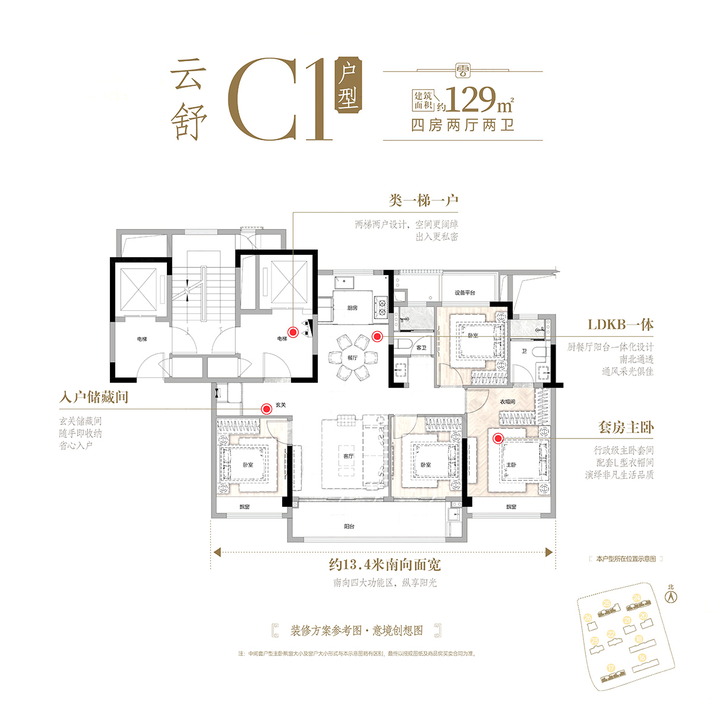
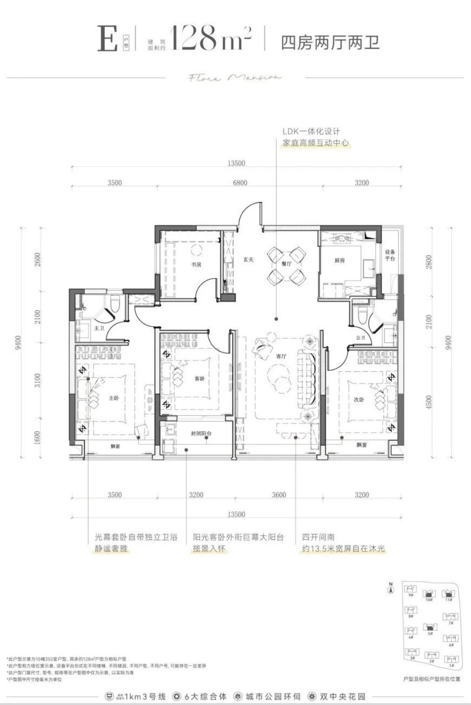
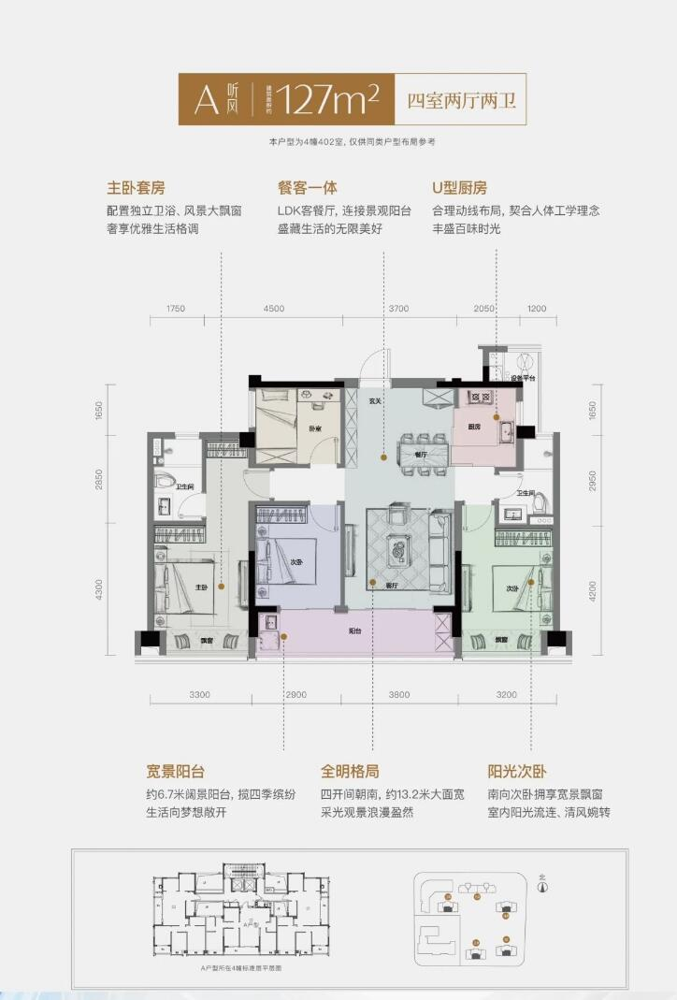
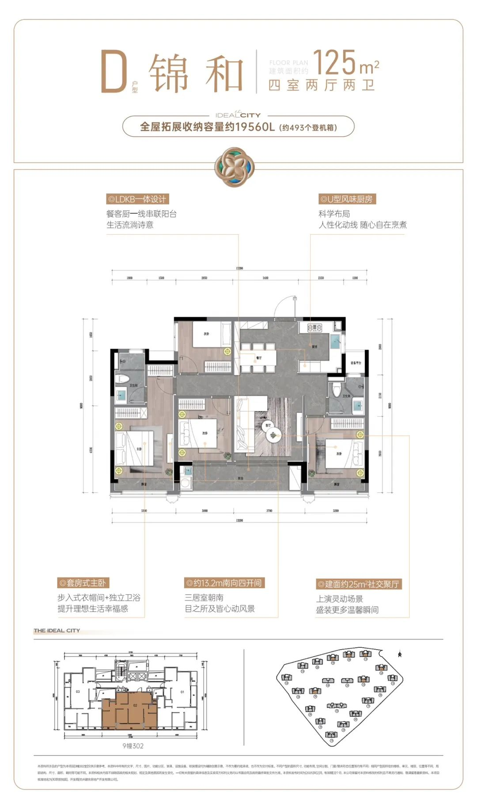
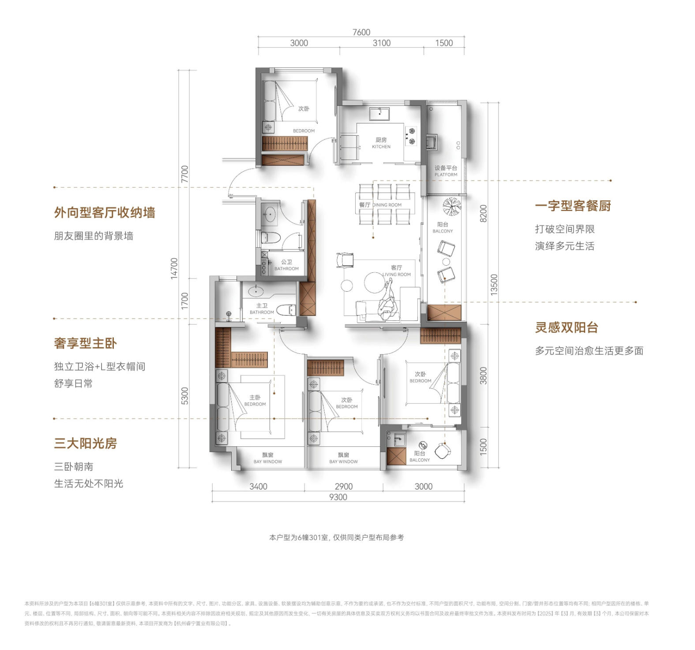
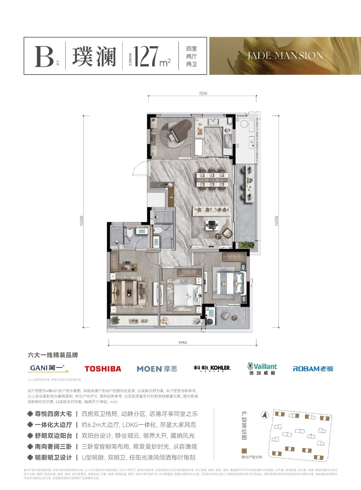
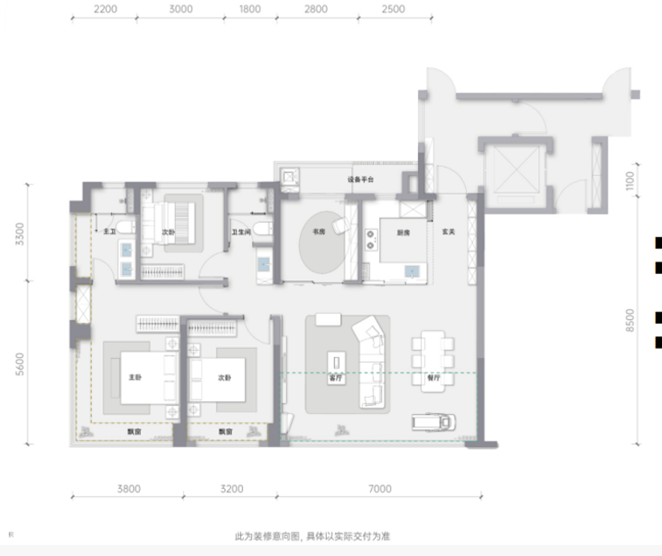
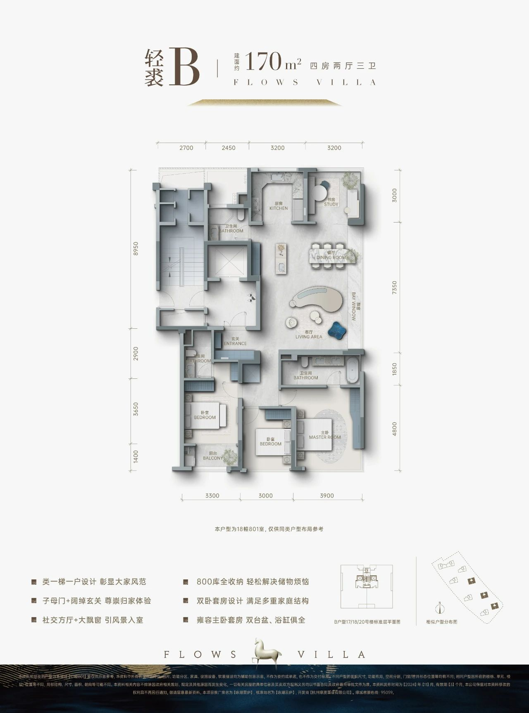

先说结论（第二版，2026-11-03）
- 【第四版补充检索 2026-11-03】又查了绍兴、金华/义乌、衢州、丽水、湖州、嘉兴、舟山，宁波、温州、台州深挖了一遍，还查了苏州、无锡、南京、上海。用了房天下、吉屋、房产超市、搜狐焦点、网易、潮新闻、房叔等来源，没有新增合格案例。查到的近似案例都不符合：台州中盛悦江府（北面临江，但 130/139 是南北通厅，185 是顶跃）；湖州晴屿望湖 185、无锡建发玺云 183、温州建发望江（都是第四代）；温州阳光城檀境（14–28F，有北厅但户型图未见）；桐庐富春望（高层，2021）；嘉兴、苏州的洋房都是南厅；上海虹盛里（5–8F 滨水洋房，没确认有北厅）。（事实，来源见各站页面）
- 事实按“客餐厅贴北立面、北侧不放厨房或书房、≤18F、单楼梯”筛选，C 组（约 170）只有 1 例：湖翠里 D-166。D 组（约 180）0 例。第三版的 9 例纵向北厅北立面都被厨房或书房挡着，已经全部剔除。
- 事实以前剔除的三例这次核实了层数：春风金沙是 30–32F，温州建发望江是 20–24F 的高层，而且是第四代住宅，都不收。湖翠里是 15–17F（≤54m），这次收回。
- 推断一线看江的真北厅，大多建在高层江景楼里（多半是剪刀梯），54m 以下的极少。杭州、温州、台州、宁波都查过，有图又满足全部条件的只找到这一例。
- 建议龙游可以以湖翠里 D-166 为 170 段的原型：北面是 7.4m 客餐一体厅，四个房间朝南，两梯两户。180 段可以在它的基础上，把北厅开间放大到 9–10m，加一个开放西厨（放在厅的侧边，不挡北窗），再多一间套房。这是设计建议，不是现成的案例。
- 事实B 组（南向横厅）还是暂缺。
| 编号 | 项目 · 户型 | 地区 | 面积 | 层数 |
|---|---|---|---|---|
| A1 | 建发·云涌之江 C1-129 | 杭州 | 约129㎡ 四房两卫 | 未核实未查到该楼栋层数；全盘容积率 2.2 |
| A2 | 滨江·棠悦芳华轩 E-128 | 杭州 | 约128㎡ 四房两卫 | 事实全盘 12–16F（看房网）；推断约 50m 以下 |
| A3 | 海威绿城·月咏和风 A-127 | 杭州 | 约127㎡ 四房两卫 | 未核实未查到层数；全盘容积率 2.8，推断会有超 54m 的 |
| A4 | 和萃揽悦园 D-125「锦和」 | 杭州 | 约125㎡ 四房两卫 | 未核实未查到层数（容积率 2.5） |
| A5 | 绿城运河·宸岸新月府 126 | 杭州 | 约126㎡ 四房两卫 | 事实全盘 14–17F（看房网） |
| A6 | 建杭·璞御栖湖 B-127「璞澜」 | 杭州 | 约127㎡ 四房两卫 | 事实全盘 14–17F（看房网） |
| A7 | 绿城·玉海棠里 小高层 D2-129（对照） | 杭州 | 约129㎡ 四房两卫 | 事实9–11 层小高层（看房网） |
| C1 | 滨江兴耀·湖翠里 D-166（2023，早于 2024–26 偏好） | 杭州 | 约166㎡ 四房三卫 | 事实全盘 6 幢 15–17F，层高 3.06m（看房网楼盘 |
A 组 · ≤130㎡ 四开间朝南（7 例）
未改动。有出处的四开间只有 A1；A2–A6 看图判断；A7 是三开间，只作高得房率对照。
A1 · 建发·云涌之江 C1-129（杭州 西湖区·之江）
| 开发商 | 建发 & 之江城投 | 面积 | 约129㎡ 四房两卫 |
|---|---|---|---|
| 入市 | 事实2025-04-20 开盘（吉屋） | ||
| 面宽/开间 | 事实四开间朝南，南向面宽约 13.4m（图注 + 吉屋） | ||
| 楼高/层数 | 未核实未查到该楼栋层数；全盘容积率 2.2 | ||
| 梯户/核心筒 | 事实129㎡ 为两梯两户（吉屋） | ||
| 赠送/得房率 | 未知未公开 | ||
北厅位置与一体化：LDKB 一体；套房主卧；入户储藏间。

A2 · 滨江·棠悦芳华轩 E-128（杭州 拱墅区）
| 开发商 | 滨江 | 面积 | 约128㎡ 四房两卫 |
|---|---|---|---|
| 入市 | 推断约 2025（交房 2027-12） | ||
| 面宽/开间 | 推断看图是四开间朝南（三卧 + 客厅） | ||
| 楼高/层数 | 事实全盘 12–16F（看房网）；推断约 50m 以下 | ||
| 梯户/核心筒 | 未核实 | ||
| 赠送/得房率 | 未知未公开 | ||
北厅位置与一体化：LDK 一体；南向四开间。

A3 · 海威绿城·月咏和风 A-127（杭州 萧山区·宁围/滨康）
| 开发商 | 海威 & 绿城 | 面积 | 约127㎡ 四房两卫 |
|---|---|---|---|
| 入市 | 推断2024–25 | ||
| 面宽/开间 | 推断看图是四开间朝南 | ||
| 楼高/层数 | 未核实未查到层数；全盘容积率 2.8，推断会有超 54m 的楼 | ||
| 梯户/核心筒 | 未核实 | ||
| 赠送/得房率 | 未知未公开 | ||
北厅位置与一体化：LDK 一体；U 型厨房；全明。

A4 · 和萃揽悦园 D-125「锦和」（杭州 余杭区·勾庄）
| 开发商 | 建发系（杭州建余） | 面积 | 约125㎡ 四房两卫 |
|---|---|---|---|
| 入市 | 推断2024–25 | ||
| 面宽/开间 | 事实125 有“南向客厅”和“侧边客厅”两版（看房网问答）；推断看图像四开间 | ||
| 楼高/层数 | 未核实未查到层数（容积率 2.5） | ||
| 梯户/核心筒 | 未核实 | ||
| 赠送/得房率 | 未知未公开 | ||
北厅位置与一体化：客厅朝南；南北双阳台。

A5 · 绿城运河·宸岸新月府 126（杭州 拱墅区·运河）
| 开发商 | 绿城 | 面积 | 约126㎡ 四房两卫 |
|---|---|---|---|
| 入市 | 推断约 2025（交房 2027-06） | ||
| 面宽/开间 | 推断图注写“三大阳光房”，客厅加三个朝南房间，四开间有待核对 | ||
| 楼高/层数 | 事实全盘 14–17F（看房网） | ||
| 梯户/核心筒 | 未核实 | ||
| 赠送/得房率 | 未知未公开 | ||
北厅位置与一体化：一字型客餐厨；双阳台；外向型客厅收纳墙。

A6 · 建杭·璞御栖湖 B-127「璞澜」（杭州 西湖区·双浦）
| 开发商 | 建杭（杭州建浦） | 面积 | 约127㎡ 四房两卫 |
|---|---|---|---|
| 入市 | 推断2024–25 | ||
| 面宽/开间 | 未核实看图三到四开间，待核对 | ||
| 楼高/层数 | 事实全盘 14–17F（看房网） | ||
| 梯户/核心筒 | 未核实 | ||
| 赠送/得房率 | 未知未公开 | ||
北厅位置与一体化：一体化大横厅；精装品牌配置。

B 组 · 约140–155㎡ 南向客餐一体横厅（0 例）
用户参考（约 14m）
推断按图：南向面宽约 14m，主卧 3.8m + 卧室 3.2m + 横厅 7.0m，客厅和餐厅都在南侧，一体横厅；书房、厨房、入户、卫生间在北侧；两梯两户核心筒。目标是 ≥15m 的南向客餐一体横厅，约 140–155㎡。14m 只作保底。

本组暂缺：没找到有图、符合条件的案例
事实看房网 2024–26 年 140–156㎡ 的有图户型都看过了（咏湖 A1/A2、缤曜 B、璞云 C/D、河颂 C-144、沁百合 155、宸岸印月里 C-140、沐云川 145），都是南客厅 + 北餐厅的纵厅，或者边厅，没有南向客餐一体横厅。其中宸岸印月里 C-140 面宽约 14.65m、四开间，但仍是纵厅；云湖之城 D1-159 面宽约 15.1m，也是纵厅。横厅线索：咏舟府（16m 横厅，15–26F，超高）、建发云启之江 139（约 16.2m 南横厅，2023 年已售罄，小于 140）、云启钱湾 146（大横厅，面宽和层数未知）。下一步要拿到这些项目的楼栋层数和户型图。
C 组 · 约165–175㎡ 真北厅（客餐厅贴北立面，北侧无厨房/书房）（1 例）
第四版按你的要求重新筛选：客餐厅本身要贴北立面、直接看江，北侧不能放厨房或书房。符合的只有 1 例。
C1 · 滨江兴耀·湖翠里 D-166（2023，早于 2024–26 偏好）（杭州 钱塘区·金沙湖）
| 开发商 | 滨江 & 兴耀（中豪地块） | 面积 | 约166㎡ 四房三卫 |
|---|---|---|---|
| 入市 | 事实2023-02 首开，2023-04 售罄（看房网） | ||
| 面宽/开间 | 事实客餐厅北立面开间 约 7.4m、进深约 4.45m，客餐厅 33.6㎡（图注尺寸 + 看房网测评） | ||
| 楼高/层数 | 事实全盘 6 幢 15–17F，层高 3.06m（看房网楼盘页），推断最高约 52m，≤54m | ||
| 梯户/核心筒 | 事实两梯两户（搜狐 2023-02） 楼梯：未核实户型图没画楼梯间；楼高 ≤54m，推断按 GB 50016 应为单楼梯（非剪刀梯），需向物业或图审核实 | ||
| 赠送/得房率 | 事实含赠送 85%，不含赠送 79%，赠送 10.1㎡（看房网测评） | ||
北厅位置与一体化：【横向北厅】北立面：整面都是客餐厅的落地窗，北侧和东北角为通高玻璃，没有厨房或书房遮挡。厨房在客餐厅东南侧，开门对着厅，不挡北景。四个卧室（含书房）朝南，带 10.4㎡ 南阳台。房叔跑盘 No.119：“166㎡ 优秀的北厅四朝南”，北侧 3 幢正对金沙湖。

D 组 · 约175–190㎡ 真北厅（0 例）
暂缺。能找到的 175–190㎡ 真北厅都在 18F 以上（见“本版剔除”），按“不收剪刀梯”的要求都没收。
历次剔除（第二至第四版）
- 推断C 组剔除 5 例（按图是南厅，北侧只有餐厅或只是看得到北景）：璟逸 B2-170、璟逸 B1-170、叠映里 D-167、璞御栖湖 E-169、宸鹭弦歌里 175。
- 推断D 组剔除 4 例（南厅）：恒久府 A1-178（南向 16m 四开间，是南厅版）、棠月映翠 B-177、映翠湾 E-183、拱宸金茂府 A-185。
- 推断B 组剔除 5 例（不是南向客餐一体横厅）：咏湖 A2-148（14.2m，南客厅 + 北餐厅纵厅）、咏湖 A1-146（北/西侧边厅）、缤曜 B-142（14.0m，纵向客餐厅）、璞云 C-144（南客厅、北餐厅）、璞云 D-152（西厅）。
- 推断新查的也剔除（南厅）：桂月云翠园 C-172、宸岸印月里 F-175、枫揽华庭 A-189、望云璟晨府 C-176、潮语映月轩 B-188「澄映」、璟逸 C1-190、锦绣里 E1-169（北侧只有餐厅）、御湖境 168。
- 事实第四版剔除（北立面被厨房或书房挡住，不是真北厅）：咏湖雲庐 B-170（北面是厨房 + 书房）、叠映里 C-165（厨房 + 书房）、玉海棠里 E-169（厨房 + 书房）、潮语映月轩 A1-159（厨房 + 卫生间）、河颂 D1-178（家政间 + 厨房 + 书房）、恒久府 A2-178（厨房 + 卫生间 + 书房）、枫揽华庭 B-185（厨房 + 书房）、潮语映月轩 B-1-188（书房 + 厨房）、叠映里 E-188（书房 + 厨房 + 卧室）。
- 事实真北厅，但超过 18F，不收：春风金沙 D-165（30–32F，看房网）、温州建发望江 185A/185B（20–24F 高层，第四代，搜狐）。
- 事实查过但不符合：保亿湖珀润园 A-170（11F，北侧有卧室和厨房挡着）、大家·咏印明庐（12–17F，北厅南卧，北临运河，但最小是 205㎡，超出 D 段，可以当上限参考，没拿到图）。
- 事实第三版剔除（不收剪刀梯，或楼梯核实不了）：锦绣里 E2-169（层数未知，图上没画核心筒）、湖翠里 D-166（可能超过 18F，楼梯未核实）、春风金沙 D-165（层数和楼梯未核实）、温州望江 185A/185B（层数和楼梯未核实）。也看过云诵桂月轩 K-170（17/25/26F，超高）和华昭府洋房 A-180/A2-178/B-185（5–11F，但客厅朝南），都没收。
- 未核实待核的边缘案例：河颂 D2-174，布局和 D1 相同（北区纵厅），但在 9–23F 的高层楼栋里，层数没确认，暂不收。
线索 · 口径
- 事实华润·沄璟文华轩 145/178：14–18F，两梯两户，145 横向面宽 14.4m（杭州网）。没拿到图，厅的方向没核对。
- 事实其他超过 18F 被剔除的盘（朗拾湖著、锦海棠、绿汀春晓、御湖境、云咏明月等）见第一版的说明，结论不变。
- 北厅分类、面宽、厅的面积，凡是标“推断”的，都是按户型图读的。图都是开发商物料的转载，带水印。